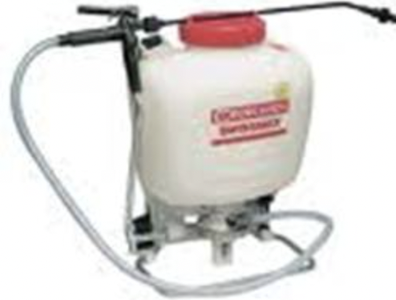

7.0 संयंत्र सुरक्षा उपकरण
- 7.1 बस्ता स्प्रेयर
- 7.2 मोटर चालित बस्ता मिस्ट ब्लोअर कम डस्टर
7.1 बस्ता स्प्रेयर
विशेषताएं
नैपसैक स्प्रेयर में एक पंप और एक वायु कक्ष होता है जो 9 से 22.5 लीटर के टैंक में स्थायी रूप से स्थापित होता है। पंप के हैंडल को कंधे के ऊपर या ऑपरेटर की बांह के नीचे फैलाना संभव बनाता है एक हाथ से पंप करें और दूसरे से स्प्रे करें। पंप को निरंतर संचालन में रखकर समान दबाव बनाए रखा जा सकता है।
विशेष विवरण:
| टैंक क्षमता (आई) | : 9-22.5 |
| पंप सिलेंडर भीतरी व्यास (मिमी) | : 39-42 |
| पंप सिलेंडर में पिस्टन की संख्या | : एक |
| दबाव कक्ष क्षमता(एमएल) | : 572-660 |
| विस्थापन मात्रा (एमएल) | : 87.24 |
| वितरण टोंटी की संख्या | : एक |
| वितरण टोंटी का प्रकार | : लड़ी पिरोया हुआ |
| कट ऑफ वाल्व मार्ग व्यास (मिमी) | : 5 |
| लांस लंबाई (मिमी) | : 725 |
| नोजल प्रकार | : खोखला शंकु |
| स्प्रे कोण | : 78 डिग्री |
| छेद भरने का आकार (मिमी) | : 94.9 |
| पंप निर्वहन (एमएल / मिनट) | : 610-896 |
| शक्ति की आवश्यकता | : एक व्यक्ति |
उपयोग:
नैपसैक स्प्रेयर का उपयोग छोटे पेड़ों की झाड़ियों और पंक्ति फसलों पर कीटनाशकों और कीटनाशकों के छिड़काव के लिए किया जाता है।
मशीन की लागत : रु. 2,500/- to 3,500/-
7.2 मोटराइज्ड बस्ता मिस्ट ब्लोअर कम डस्टर

विशेषताएं
इसमें दो प्लास्टिक टैंक (ईंधन और पानी / धूल), इंजन, पंप, स्प्रे नली, रस्सी स्टार्टर, डिलीवरी पाइप, कट-ऑफ-कॉक, शोल्डर स्ट्रैप और एक फ्रेम। इसमें एक छोटा 2-स्ट्रोक पेट्रोल/केरोसिन है 35 सीसी का इंजन जिससे एक सेंट्रीफ्यूगल पंखा जुड़ा होता है। पंखा एक उच्च वेग वाली वायु धारा उत्पन्न करता है, जिसे 90-डिग्री कोहनी के माध्यम से एक लचीली (प्लास्टिक) डिस्चार्ज नली की ओर मोड़ा जाता है, जिसमें a अलग आउटलेट। इंजन के घूमने पर पंखा एक उच्च वेग वाली वायु धारा उत्पन्न करता है। स्प्रे के लिए नियंत्रण वाल्व धीरे-धीरे खोला जाता है और वांछित प्रवाह दर के लिए समायोजित किया जाता है। ऑपरेटर डिस्चार्ज नली को लक्ष्य की ओर निर्देशित करता है। इसके लिए परिवर्तित किया जा सकता है डस्टिंग और यूएलवी एप्लीकेशन।
विशेष विवरण:
| लंबाई (मिमी) | : 460 |
| चौड़ाई (मिमी) | : 210 |
| ऊंचाई (मिमी) | : 540 |
| वजन (किग्रा) | : 9-11 |
| टैंकों की संख्या | : 2 |
| आउटलेट पर वायु वेग (एम / एस)/td> | : 65-75 |
| क्षेत्र क्षमता (हेक्टेयर / घंटा) | : 2-3 |
| बिजली की आवश्यकता (एचपी/किलोवाट) | : 1.2/0.9 ,पेट्रोल या पेट्रोल/केरोसिन इंजन |
उपयोग:
यह कीटनाशकों और कवकनाशी के छिड़काव के लिए उपयुक्त है। इसका उपयोग चावल में छिड़काव के लिए किया जाता है, फल और सब्जी की फसलें। इसका उपयोग कीटनाशकों को तरल और पाउडर के रूप में लगाने के लिए किया जा सकता है।